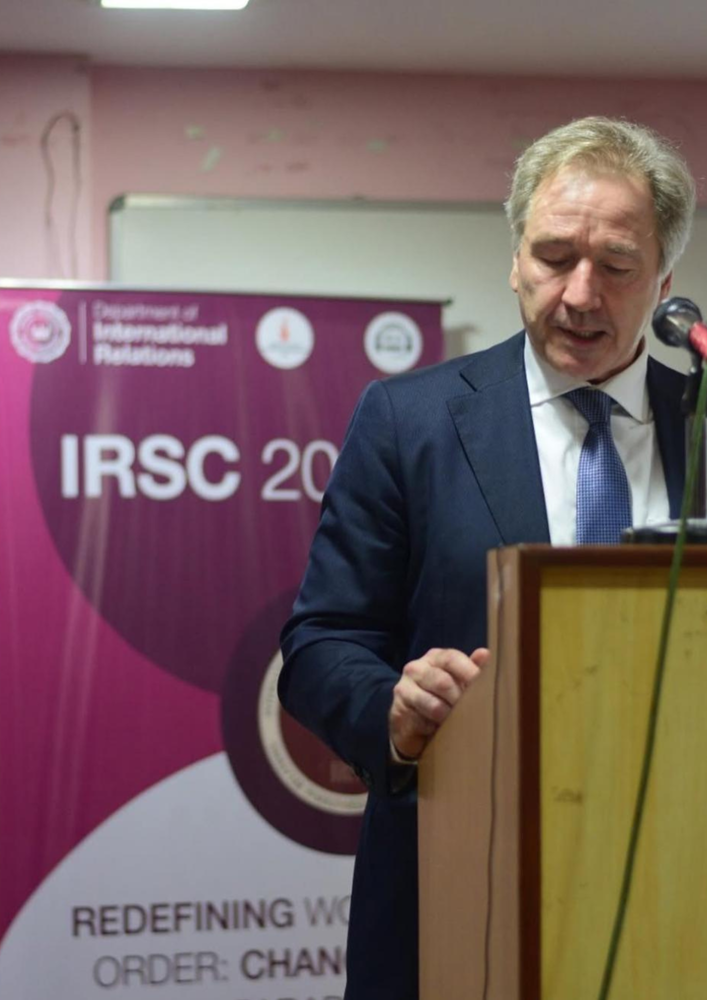
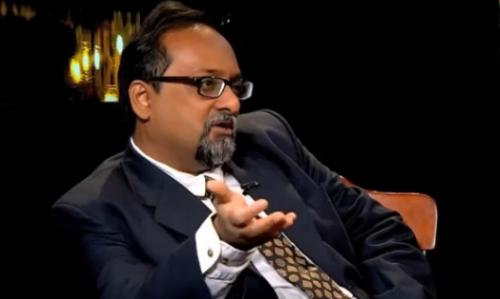

Department of International Relations ● Jadavpur University
About Our Conclave
The International Relations Scholastic Conclave, organised by the Department of International Relations at Jadavpur University, is a student-driven academic forum that brings together students, scholars, and professionals to engage with critical global issues. Since its inception in 2010, the conclave has been a pursuit of intellectual exploration, aiming to unravel the complexities of global politics. By convening a diverse group of experts and students, the event facilitates in-depth discussions and debates on key themes in International Relations.
Strategic Autonomy And Global Re-alignment: Exploring India’s Prospect In A Multipolar World
This theme has been chosen for its broad and interdisciplinary character. It seeks to create discussions surrounding global governance, the geopolitics of the Indo-Pacific and Eurasia, non-Western perspectives in International Relations, emerging technologies, climate governance, migration, hybrid threats, connectivity corridors, and the vision of Viksit Bharat 2047.

Message From Teacher Coordinators

Shibashis Chatterjee | Professor, Department of International Relations, Jadavpur University, Kolkata
“It is with profound honor that we welcome Jadavpur University, a distinguished Indian academic institution dedicated to cultivating policy engagement, fostering informed discourse, and advancing critical scholarship in International Relations and Strategic Studies.”
Subhajit Naskar | Asst. Professor, Department of International Relations, Jadavpur University, Kolkata
“Indian Constitution in its articles 14 and 15 promises equality with legal binding and ensures opportunities without discrimination as normative principles and foundational commitments of the Indian Republic.”
At the International Relations Scholastic Conclave (IRSC), we believe that meaningful discourse begins with informed inquiry and critical thought. The Editorial Board is dedicated to fostering intellectual engagement by creating a platform where students, scholars, and enthusiasts can explore the complexities of international relations through research, analysis, and dialogue. Our Newsletter presents curated insights into contemporary global affairs, editorial perspectives, and updates that connect current events with broader academic debates. The Articles section features original research, policy analyses, and opinion pieces that encourage deeper reflection on the evolving international order. Together, these sections embody IRSC's commitment to promoting academic excellence, informed debate, and a vibrant culture of scholarship.
Explore our events through two distinct categories: Flagship Events, which define the core identity of IRSC, and Associate Events, which complement the conclave by offering diverse platforms for intellectual and creative engagement.
Over the years, IRSC has emerged as a vibrant academic platform that encourages dialogue across disciplinary and ideological boundaries. It has consistently fostered an environment where young scholars, researchers, and students can engage with pressing international issues while challenging established paradigms. This newsletter carries forward that legacy by creating an intellectual space that is both inclusive and critically engaged, where emerging perspectives are not only acknowledged but meaningfully centered.
Whether you're passionate about analysing global events, sharing your opinions, writing research-based articles, book reviews, interviews, or creative pieces related to world affairs, this is your opportunity to contribute and be part of a growing community of young thinkers. We invite students from all disciplines to submit their original work and help make the IRSC Newsletter a space for meaningful dialogue and diverse perspectives.